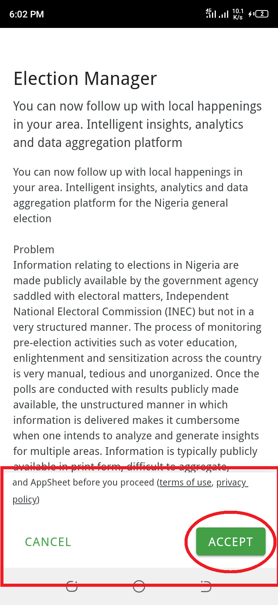

Election Manager
You can download the app by typing the following in a browser and it should take you to the google play store
bit.ly.electionmanager_android
bit.ly.electionmanager_android
or go directly to google play store on your phone search for election manager and make sure it is the one by "Madison Innovation Hub". It is 8.6mb in size.

make sure data is on during the installation process, as it will load and sync after install.



click "Presidential Result Upload" at the bottom of the app.
Next, tap "polling unit". By default polling unit is selected (in green). Then fill in your "Local Government - Ward Name"
Scroll to how to get and select your "Local Government - Ward Name"
How to get and select your "Local Government - Ward Name".
The "Local Government - Ward Name" fully describe your ward name in the entire Nigeria. Its format is like this:{State} -{LGA} - {Ward Name/Reg Area} -{Ward No.}
In each ward there are several polling units.
Note:"Reg Area" = Registration Area.
The "Local Government - Ward Name" is selected from the dropdown lists already made in the app. But the list is too long.
So, to quickly select ward from the long list, click on the search box on top of the dropdown list and type the "Ward/Registration Area" name, E.g "ABODI/PATESI" in Lagos. You can find your "Registration area" at the top of the EC 8A form you are about to upload, or from the top of the list of voters in your pulling unit if it is still there.
Polling Unit Number
Click on the next box to select your Polling Unit Number. If you don't know your Polling Unit Number go to www.inecelectionresults.ng and select Presidential election and navigate to your pulling unit name and look at the last number as shown below: